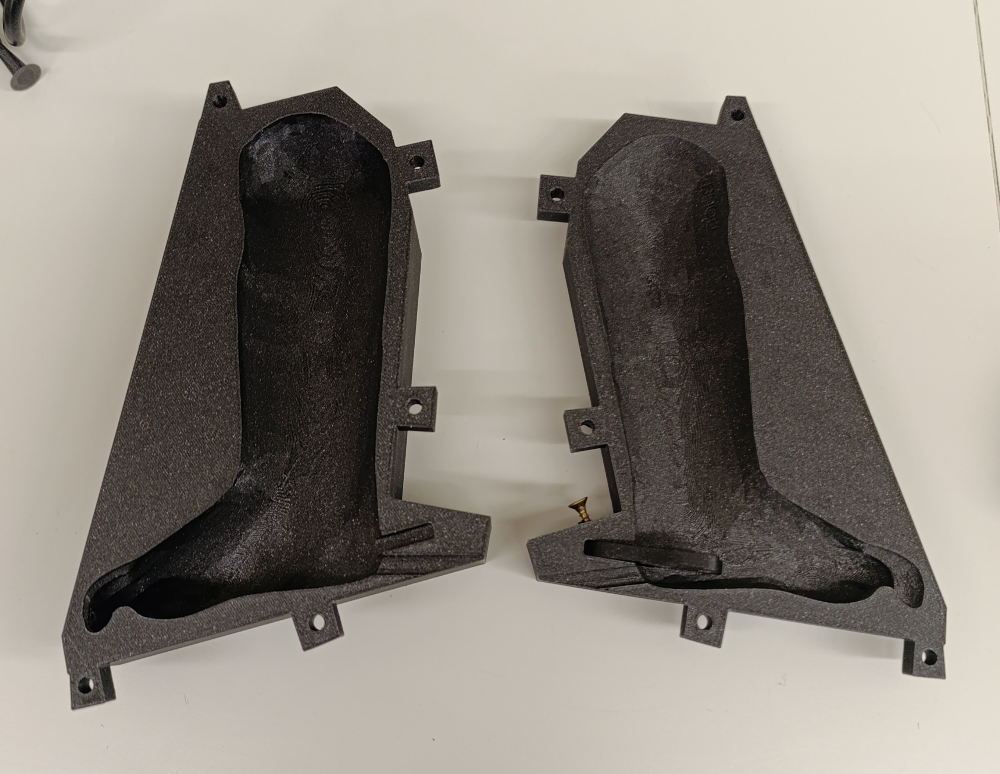
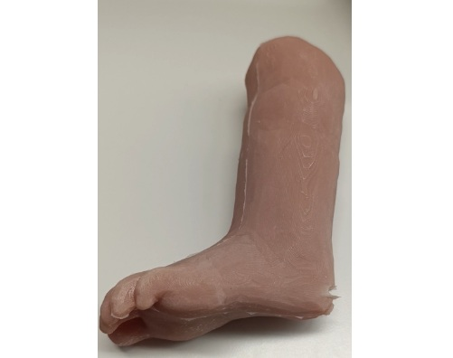
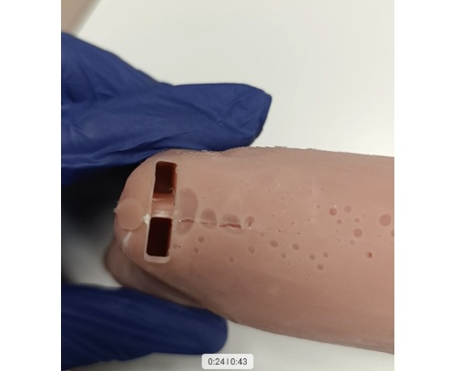

Obtención del modelo de pie anatómico de neonato: Se obtuvo un modelo anatómico de pie de neonato a través de escaneo 3D de un pie perteneciente a otro simulador, utilizando tecnología de escaneo láser para capturar con precisión las formas y detalles anatómicos.

Diseño del molde negativo: Utilizando el archivo del modelo 3D del pie, se diseñó un molde negativo utilizando el software Fusion 360. Este molde se utilizó para crear la forma del simulador de punción talonaria.

Impresión del molde negativo: Se fabricó el molde negativo mediante fabricación aditiva en PLA utilizando una impresora 3D Prusa MK4S

Fabricación del cuerpo del simulador Se inyecto silicona a presión en el molde para asegurarse de que la silicona líquida se ajustara perfectamente a las paredes del mismo durante su curado.

Rellenado de sangre y sellado Se llenó el interior del talón del neonato con una mezcla de agua y colorante rojo para simular la sangre, y se selló el talón para evitar fugas.